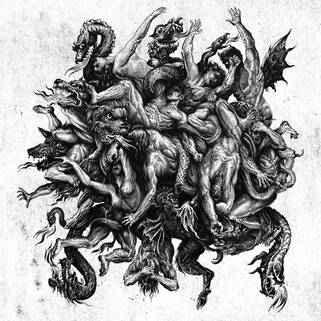

From Atlanta, Überchriist descend into darker waters with Anti-Phoenix Descent, a black metal composition built around the feeling of an inward journey rather than a straightforward assault. The track moves through a dense and hostile atmosphere, where guitars and percussion create the sensation of sinking steadily into something ancient and unknown.
There is a strong sense of movement throughout the composition. Tremolo-driven passages and relentless drumming give the track its momentum, while the layered vocals add another dimension of menace. Rather than remaining fixed in one place, the song feels as though it is constantly travelling deeper, reflecting the maritime imagery and descent into the abyss surrounding its concept.
What makes Anti-Phoenix Descent particularly effective is the balance between aggression and atmosphere. The darkness is not presented simply as violence or spectacle, but as a space to be entered and endured. The composition gradually establishes its own world, allowing the black metal framework to carry both its physical weight and its more esoteric character.
Anti-Phoenix Descent stands as a strong introduction to the world of Dæmonic Apotheosis, carrying the feeling of an ominous descent while remaining firmly rooted in black metal. There is no easy resolution here, only the continuing pull toward whatever waits beneath the surface.